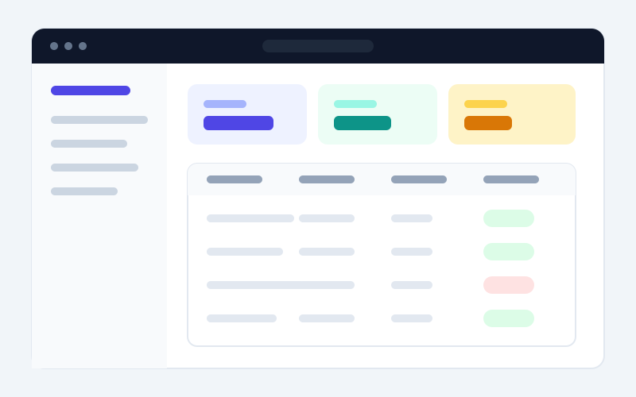
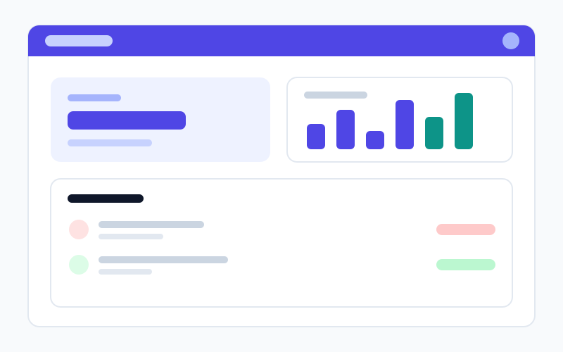
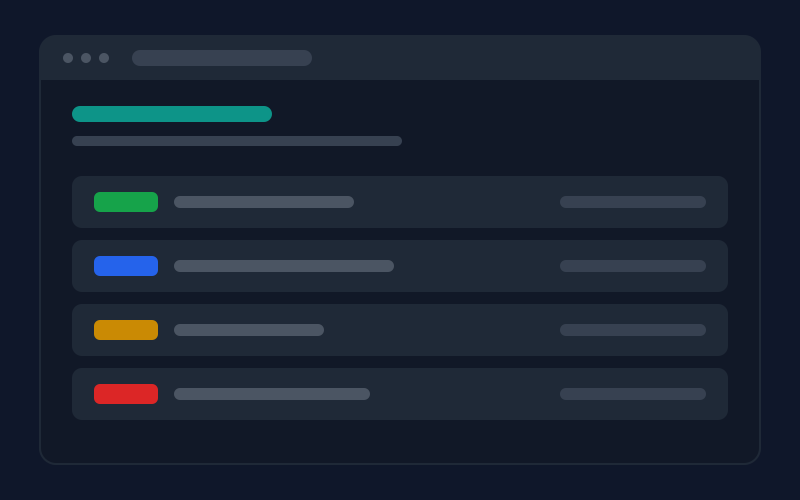
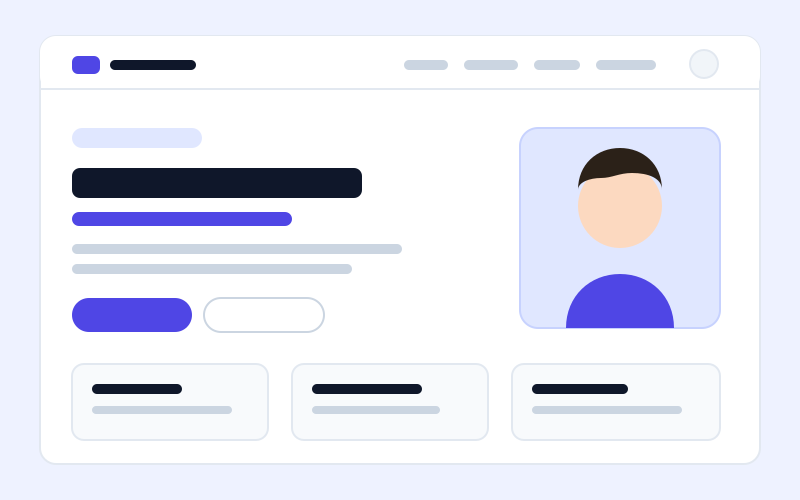

Ingeniería de Software · Universidad Estatal de Milagro (UNEMI)
Inicié la carrera en 2022 y actualmente curso el octavo semestre. Áreas de mayor interés: desarrollo web, arquitectura de software, bases de datos e ingeniería de requisitos.
Disponible para prácticas y proyectos
Estudiante de Ingeniería de Software · Desarrollo Web Full Stack
Octavo semestre de Ingeniería de Software. Construyo aplicaciones web con JavaScript, React y APIs REST, cuidando la estructura del código, la accesibilidad y una experiencia de usuario limpia.
Soy Jean Carlos Suárez, estudiante de octavo semestre de Ingeniería de Software en la Universidad Estatal de Milagro (UNEMI). Me interesa el desarrollo web full stack, con una inclinación clara hacia el frontend: interfaces ordenadas, accesibles y fáciles de mantener.
En la universidad he trabajado con Java, Python y JavaScript, tanto en aplicaciones de escritorio como en servicios web. Fuera de clase dedico tiempo a practicar con React, Node.js y bases de datos relacionales, y a entender cómo se organiza un proyecto real: control de versiones, revisión de código y despliegue.
Mi objetivo a corto plazo es hacer prácticas profesionales en un equipo de desarrollo donde pueda aportar en la construcción de interfaces y aprender de perfiles con más experiencia.
Inicié la carrera en 2022 y actualmente curso el octavo semestre. Áreas de mayor interés: desarrollo web, arquitectura de software, bases de datos e ingeniería de requisitos.
Cursos autodidactas de JavaScript moderno, React y fundamentos de Docker para acompañar la formación universitaria.
Aplicación full stack en equipo aplicando metodología Scrum, control de versiones con Git y despliegue del cliente en la nube.
Tecnologías con las que trabajo, agrupadas por categoría. El nivel indicado refleja lo que puedo explicar y sostener en una entrevista técnica.
Marcado semántico, formularios y accesibilidad básica.
Flexbox, Grid, custom properties y diseño responsive.
DOM, eventos, fetch, async/await y módulos.
Componentes, hooks, estado y consumo de APIs.
Tipos, interfaces y tipado de componentes. En aprendizaje.
POO, colecciones y aplicaciones académicas con JDBC.
Rutas, middlewares y autenticación con JWT.
Scripting, automatización y APIs con FastAPI.
Modelado relacional, joins, vistas y procedimientos.
Consultas, índices y normalización de esquemas.
Colecciones, CRUD y modelado de documentos con Mongoose.
Ramas, pull requests, resolución de conflictos y Pages.
Imágenes, contenedores y docker-compose en desarrollo.
Pruebas de endpoints, colecciones y variables de entorno.
Wireframes, prototipos simples y sistemas de componentes.
Despliegue de sitios estáticos y servicios sencillos.
Proyectos académicos y personales. Usa los filtros para ver los que emplean una tecnología concreta.

Aplicación web para registrar productos, controlar stock y generar reportes de movimientos en una microempresa.
Proyecto académico · 2024 · Equipo de 3 personas
Una microempresa llevaba su inventario en hojas de cálculo sueltas, lo que provocaba diferencias entre el stock real y el registrado. El sistema centraliza productos, entradas y salidas en una sola fuente de datos.
Modelado de la base de datos, implementación del CRUD de productos y del módulo de reportes de movimientos con filtros por fecha.

Aplicación web para registrar ingresos y gastos personales, categorizarlos y visualizar el resumen mensual.
Proyecto personal · 2025
Llevar las finanzas personales en notas o en la memoria hace imposible saber en qué se va el dinero. FinTrack registra cada movimiento, lo clasifica por categoría y muestra el balance del mes en un solo panel.
Interfaz en React con hooks y estado global ligero, API REST con Express, autenticación con JWT y persistencia en MongoDB Atlas.

Servicio REST para gestionar el catálogo de libros y los préstamos de una biblioteca, con documentación automática.
Proyecto académico · 2025
El control de préstamos se llevaba manualmente y no existía forma de consultar la disponibilidad de un libro sin acudir físicamente. La API expone el catálogo y el estado de cada préstamo para que cualquier cliente pueda consumirlo.
Endpoints CRUD de libros, usuarios y préstamos, validación de datos con Pydantic, control de fechas de devolución y despliegue local con Docker Compose.

Este mismo sitio: portafolio responsive construido sin frameworks, con un sistema de diseño propio documentado.
Proyecto académico · 2026
Necesitaba un espacio propio donde mostrar mis proyectos y habilidades sin depender de plantillas de terceros, y que además sirviera como carta de presentación para postular a prácticas.
HTML semántico, CSS organizado en capas (tokens, base, componentes y layout), tema claro/oscuro con persistencia en localStorage, filtro de proyectos, modal accesible, validación de formulario y navegación responsive.
No hay proyectos que usen esa tecnología todavía.
¿Tienes una vacante de prácticas, un proyecto o una duda? Escríbeme y respondo en menos de 48 horas.
Prefiero el correo para temas formales y LinkedIn para conversaciones rápidas.